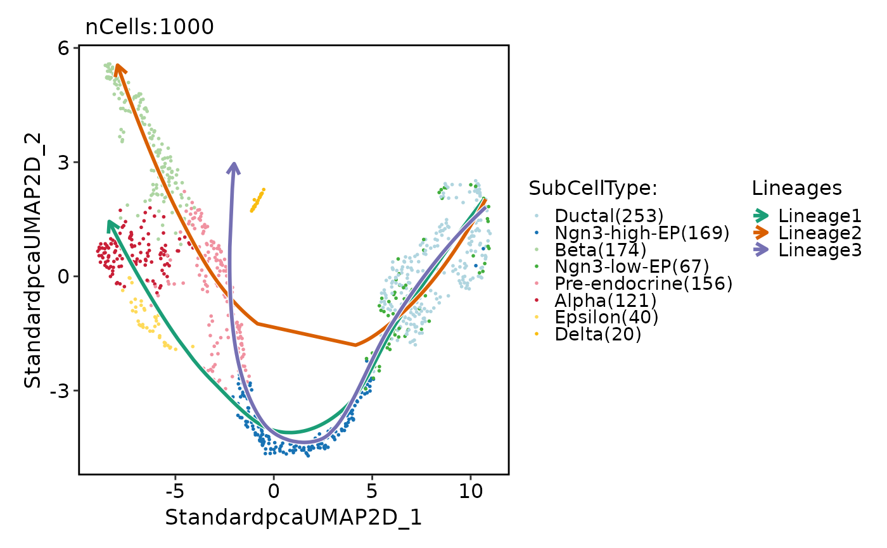
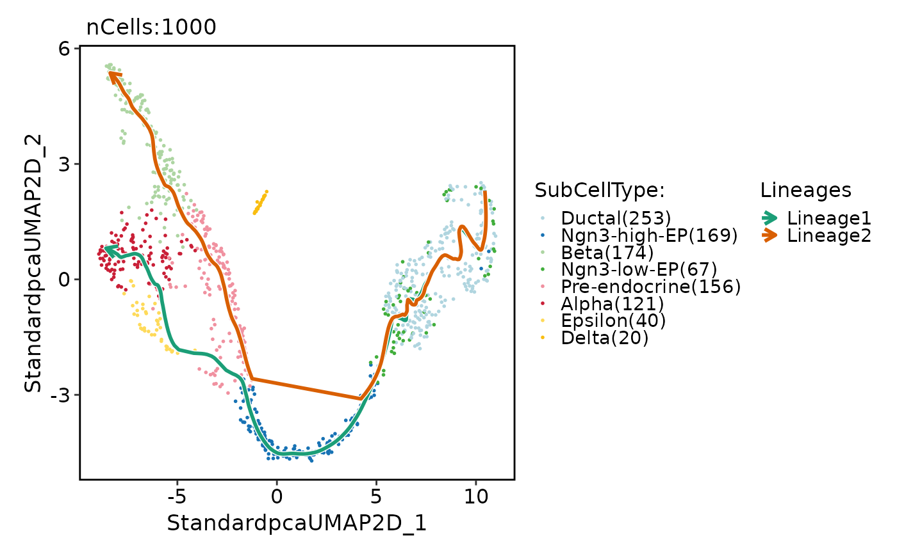
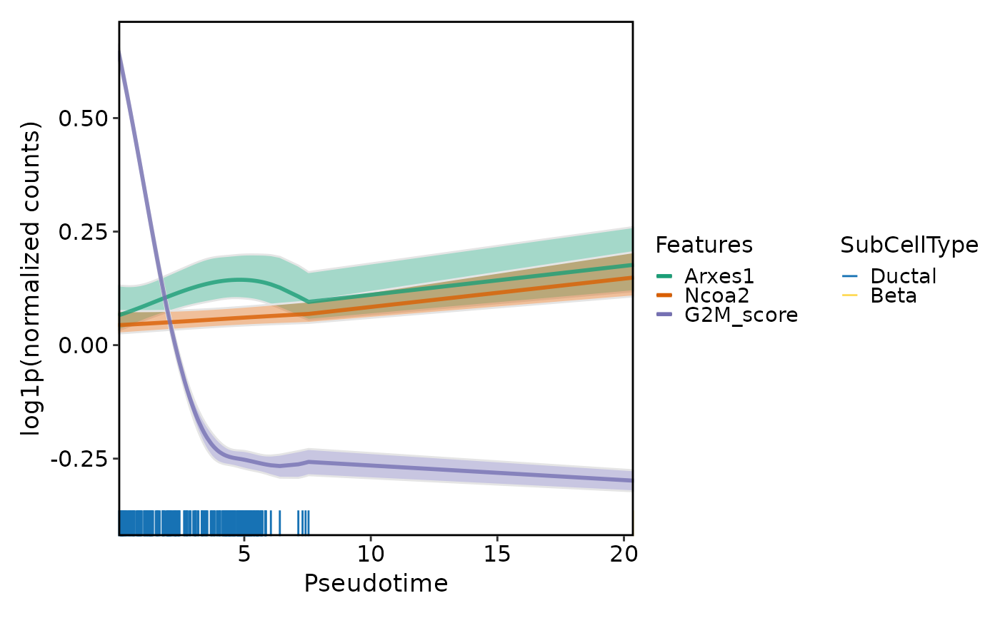
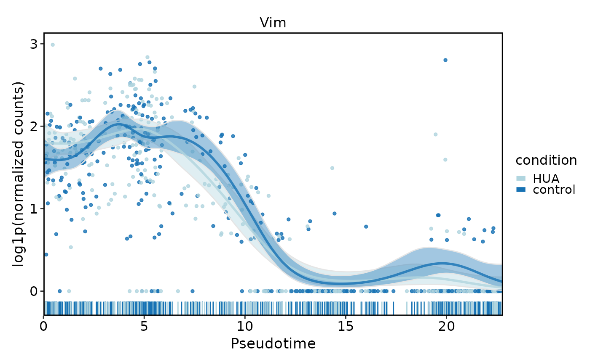
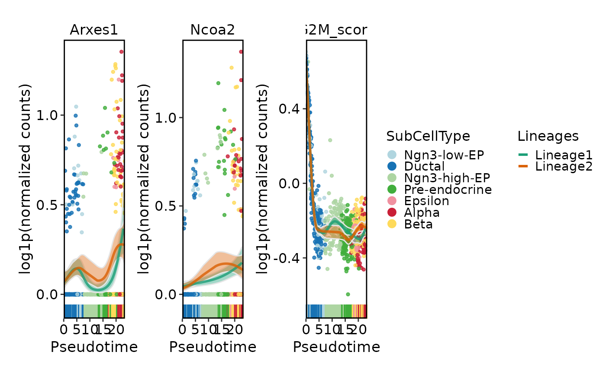
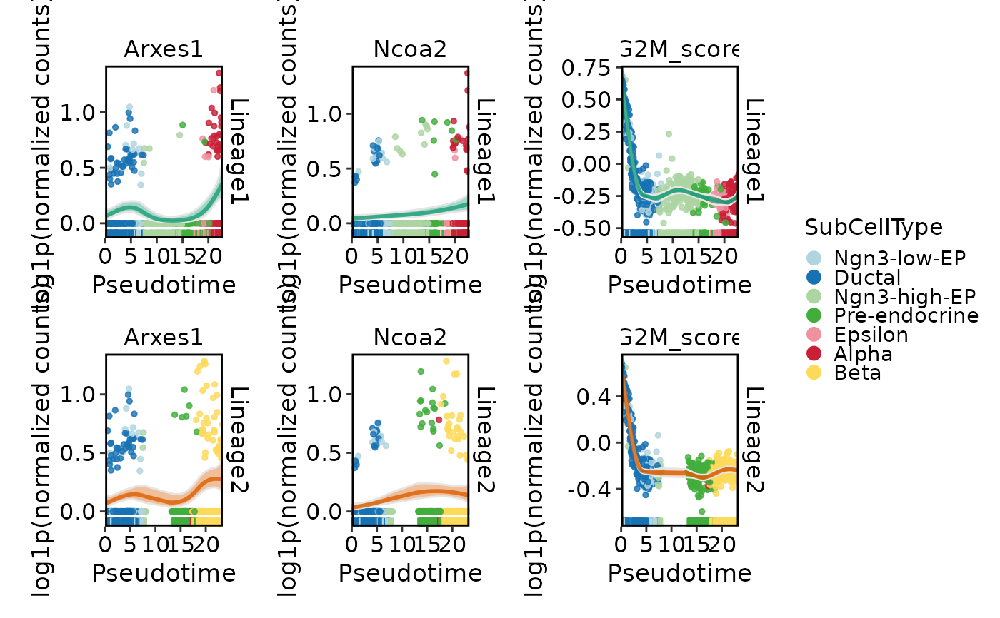

Plot dynamic features across pseudotime
Usage
DynamicPlot(
object,
lineages,
features,
group.by = NULL,
group_use = NULL,
cells = NULL,
layer = "counts",
assay = NULL,
family = NULL,
exp_method = c("log1p", "raw", "zscore", "fc", "log2fc"),
lib_normalize = identical(layer, "counts"),
libsize = NULL,
compare_lineages = TRUE,
compare_features = FALSE,
add_line = TRUE,
add_interval = TRUE,
line.size = 1,
line_palette = "Dark2",
line_palcolor = NULL,
add_point = TRUE,
pt.size = 1,
point_palette = "Chinese",
point_palcolor = NULL,
add_rug = TRUE,
flip = FALSE,
reverse = FALSE,
x_order = c("value", "rank"),
aspect.ratio = NULL,
legend.position = "right",
legend.direction = "vertical",
theme_use = "theme_scop",
theme_args = list(),
combine = TRUE,
nrow = NULL,
ncol = NULL,
byrow = TRUE,
cores = 1,
verbose = TRUE,
seed = 11,
fit.by = NULL,
srt = NULL
)Arguments
- object
A
Seuratobject.- lineages
Lineages to plot.
- features
Features to use.
- group.by
Metadata column(s) used to color cells.
- group_use
Groups from
group.byto keep. If bothgroup_useandcellsare provided, their intersection will be used.- cells
Cell names to use.
- layer
Assay layer to use.
- assay
Assay to use.
NULLuses the default assay.- family
GLM family.
NULLchooses automatically.- exp_method
Expression transform:
"log1p","raw","zscore","fc", or"log2fc". Withfit.by, transform parameters are shared across groups within each lineage.- lib_normalize
Library-size normalize. Defaults to
TRUEwhenlayeris counts.- libsize
Library size for each cell.
- compare_lineages, compare_features
Compare lineages or features on one plot. Grouped line or interval plots support up to six combined lineage-feature series.
- add_line, add_interval, line.size, line_palette, line_palcolor
Fitted line and CI.
- add_point, pt.size, point_palette, point_palcolor
Overlay points.
- add_rug
Draw rugs.
- flip, reverse
Flip or reverse the x-axis.
- x_order
Order of x-axis values.
- aspect.ratio
Panel aspect ratio.
- legend.position
Legend side (
"right","left","top","bottom"). Gap to the heatmap grows automatically when long row names are on the right.- legend.direction
Legend direction:
"horizontal"or"vertical".- theme_use, theme_args
Theme name or function, plus extra theme arguments.
- combine, nrow, ncol, byrow
Combine plots with patchwork.
combine = FALSEreturns a list of ggplots.- cores
Number of CPU cores.
NULLlets each backend pick its own default: the process OpenMP team (OMP_NUM_THREADS) for C++ kernels and one worker for R/Python parallel backends.- verbose
Whether to print the message. Default is
TRUE.- seed
Random seed.
- fit.by
Optional metadata column used to fit an independent trajectory for each group over that group's observed pseudotime range. The fit is not extrapolated beyond observed cells. This does not change the existing point-coloring behavior of
group.by. Groups with fewer than 10 cells or 10 unique pseudotime values are shown as raw points or rugs but are not fitted.- srt
Deprecated alias for
object; supply exactly one of the two. It will be removed in scop 1.0.0.
Examples
Restored example output generated on 2026-10-13 from SCOP 53ed7e08f. These historical examples have not been revalidated against the current release. Current usage and arguments are documented above.
data(pancreas_sub)
pancreas_sub <- RunStandardWorkflow(pancreas_sub)
#> ℹ [2026-10-13 16:21:36] Start standard processing workflow...
#> ℹ [2026-10-13 16:21:36] Checking a list of <Seurat>...
#> ! [2026-10-13 16:21:37] Data 1/1 of the `srt_list` is "unknown"
#> ℹ [2026-10-13 16:21:37] Perform `NormalizeData()` with `normalization.method = 'LogNormalize'` on 1/1 of `srt_list`...
#> ℹ [2026-10-13 16:21:37] Perform `FindVariableFeatures()` on 1/1 of `srt_list`...
#> ℹ [2026-10-13 16:21:37] Use the separate HVF from `srt_list`
#> ℹ [2026-10-13 16:21:37] Number of available HVF: 2000
#> ℹ [2026-10-13 16:21:37] Finished check
#> ℹ [2026-10-13 16:21:37] Perform `ScaleData()`
#> ℹ [2026-10-13 16:21:37] Perform pca linear dimension reduction
#> ℹ [2026-10-13 16:21:38] Use stored estimated dimensions 1:23 for Standardpca
#> ℹ [2026-10-13 16:21:38] Perform `Seurat::FindClusters()` with `cluster_algorithm = 'louvain'` and `cluster_resolution = 0.6`
#> ℹ [2026-10-13 16:21:38] Reorder clusters...
#> ℹ [2026-10-13 16:21:38] Skip `log1p()` because `layer = data` is not "counts"
#> ℹ [2026-10-13 16:21:38] Perform umap nonlinear dimension reduction
#> ✔ [2026-10-13 16:21:46] Standard processing workflow completed
pancreas_sub <- RunSlingshot(
pancreas_sub,
group.by = "SubCellType",
reduction = "UMAP"
)

CellDimPlot(
pancreas_sub,
group.by = "SubCellType",
reduction = "UMAP",
lineages = paste0("Lineage", 1:2),
lineages_span = 0.1
)

DynamicPlot(
pancreas_sub,
lineages = "Lineage1",
features = c("Arxes1", "Ncoa2", "G2M_score"),
group.by = "SubCellType",
group_use = c("Ductal", "Beta"),
compare_features = TRUE
)
#> ℹ [2026-10-13 16:21:48] Start find dynamic features
#> ℹ [2026-10-13 16:21:48] Data type is raw counts
#> ℹ [2026-10-13 16:21:49] Number of candidate features (union): 3
#> ℹ [2026-10-13 16:21:49] Data type is raw counts
#> ! [2026-10-13 16:21:49] Negative values detected
#> ℹ [2026-10-13 16:21:49] Calculating dynamic features for "Lineage1"...
#> ℹ [2026-10-13 16:21:49] Using 1 core
#> ⠙ [2026-10-13 16:21:49] Running for 1 [1/3] ■■■ 33% | ETA: 0s
#> ✔ [2026-10-13 16:21:49] Completed 3 tasks in 113ms
#>
#> ℹ [2026-10-13 16:21:49] Building results
#> ✔ [2026-10-13 16:21:49] Find dynamic features done

# Demonstration only: create two conditions spanning the same pseudotime.
lineage1_cells <- rownames(pancreas_sub@meta.data)[
order(pancreas_sub$Lineage1, na.last = NA)
]
pancreas_sub$condition <- NA_character_
pancreas_sub$condition[lineage1_cells] <- rep(
c("control", "HUA"),
length.out = length(lineage1_cells)
)
DynamicPlot(
pancreas_sub,
lineages = "Lineage1",
features = "Vim",
group.by = "condition",
fit.by = "condition"
)
#> ℹ [2026-10-13 16:21:50] Start find dynamic features
#> ℹ [2026-10-13 16:21:51] Data type is raw counts
#> ℹ [2026-10-13 16:21:51] Number of candidate features (union): 1
#> ℹ [2026-10-13 16:21:51] Data type is raw counts
#> ℹ [2026-10-13 16:21:51] Calculating dynamic features for "Lineage1"...
#> ℹ [2026-10-13 16:21:51] Using 1 core
#> ℹ [2026-10-13 16:21:51] Building results
#> ✔ [2026-10-13 16:21:51] Find dynamic features done
#> ℹ [2026-10-13 16:21:51] Start find dynamic features
#> ℹ [2026-10-13 16:21:52] Data type is raw counts
#> ℹ [2026-10-13 16:21:52] Number of candidate features (union): 1
#> ℹ [2026-10-13 16:21:52] Data type is raw counts
#> ℹ [2026-10-13 16:21:52] Calculating dynamic features for "Lineage1"...
#> ℹ [2026-10-13 16:21:52] Using 1 core
#> ℹ [2026-10-13 16:21:52] Building results
#> ✔ [2026-10-13 16:21:52] Find dynamic features done

DynamicPlot(
pancreas_sub,
lineages = c("Lineage1", "Lineage2"),
features = c("Arxes1", "Ncoa2", "G2M_score"),
group.by = "SubCellType",
compare_lineages = TRUE,
compare_features = FALSE
)
#> ℹ [2026-10-13 16:21:53] Start find dynamic features
#> ℹ [2026-10-13 16:21:53] Data type is raw counts
#> ℹ [2026-10-13 16:21:54] Number of candidate features (union): 3
#> ℹ [2026-10-13 16:21:54] Data type is raw counts
#> ! [2026-10-13 16:21:54] Negative values detected
#> ℹ [2026-10-13 16:21:54] Calculating dynamic features for "Lineage1"...
#> ℹ [2026-10-13 16:21:54] Using 1 core
#> ⠙ [2026-10-13 16:21:54] Running for 1 [1/3] ■■■ 33% | ETA: 0s
#> ✔ [2026-10-13 16:21:54] Completed 3 tasks in 114ms
#>
#> ℹ [2026-10-13 16:21:54] Building results
#> ✔ [2026-10-13 16:21:54] Find dynamic features done
#> ℹ [2026-10-13 16:21:54] Start find dynamic features
#> ℹ [2026-10-13 16:21:54] Data type is raw counts
#> ℹ [2026-10-13 16:21:55] Number of candidate features (union): 3
#> ℹ [2026-10-13 16:21:55] Data type is raw counts
#> ! [2026-10-13 16:21:55] Negative values detected
#> ℹ [2026-10-13 16:21:55] Calculating dynamic features for "Lineage2"...
#> ℹ [2026-10-13 16:21:55] Using 1 core
#> ⠙ [2026-10-13 16:21:55] Running for 1 [1/3] ■■■ 33% | ETA: 0s
#> ✔ [2026-10-13 16:21:55] Completed 3 tasks in 111ms
#>
#> ℹ [2026-10-13 16:21:55] Building results
#> ✔ [2026-10-13 16:21:55] Find dynamic features done

DynamicPlot(
pancreas_sub,
lineages = c("Lineage1", "Lineage2"),
features = c("Arxes1", "Ncoa2", "G2M_score"),
group.by = "SubCellType",
compare_lineages = FALSE,
compare_features = FALSE
)
#> ℹ [2026-10-13 16:21:56] Start find dynamic features
#> ℹ [2026-10-13 16:21:57] Data type is raw counts
#> ℹ [2026-10-13 16:21:57] Number of candidate features (union): 3
#> ℹ [2026-10-13 16:21:57] Data type is raw counts
#> ! [2026-10-13 16:21:57] Negative values detected
#> ℹ [2026-10-13 16:21:57] Calculating dynamic features for "Lineage1"...
#> ℹ [2026-10-13 16:21:57] Using 1 core
#> ⠙ [2026-10-13 16:21:57] Running for 1 [1/3] ■■■ 33% | ETA: 0s
#> ✔ [2026-10-13 16:21:57] Completed 3 tasks in 117ms
#>
#> ℹ [2026-10-13 16:21:57] Building results
#> ✔ [2026-10-13 16:21:58] Find dynamic features done
#> ℹ [2026-10-13 16:21:58] Start find dynamic features
#> ℹ [2026-10-13 16:21:58] Data type is raw counts
#> ℹ [2026-10-13 16:21:58] Number of candidate features (union): 3
#> ℹ [2026-10-13 16:21:59] Data type is raw counts
#> ! [2026-10-13 16:21:59] Negative values detected
#> ℹ [2026-10-13 16:21:59] Calculating dynamic features for "Lineage2"...
#> ℹ [2026-10-13 16:21:59] Using 1 core
#> ℹ [2026-10-13 16:21:59] Building results
#> ✔ [2026-10-13 16:21:59] Find dynamic features done
